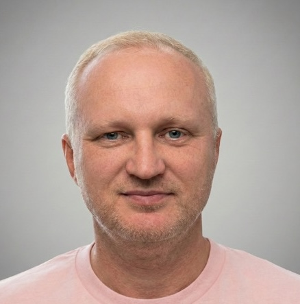

- Senior software engineer and tech lead focused on cloud infrastructure and developer productivity: building resilient, reliable systems and automations that reduce delivery time from weeks to hours, with an emphasis on large-scale distributed architectures.
- Current focus: Cognitive/Embodied AI and agentic systems — tool-using agents in continuous cognitive loops, self-learning behaviors, and dynamic role switching capable of reasoning over complex operational scenarios (Vertex AI / Gemini).
- Experienced in leading engineering teams, fostering strong technical cultures, reducing delivery times, and mentoring developers to build scalable, high-performance distributed systems.
- Former Google Developer Expert (Cloud and Web). Public speaker and workshop/hackathon organizer aiming to share knowledge and empower the broader engineering community.
- Public speaking since 2008; speaker at dozens of conferences including JEEConf, UAWeb, Google DevFest, and BuildStuff (and helped organize some of them).
Skillset AI/LLM: Cognitive/Embodied AI systems, Vertex AI (Gemini), tool-using agents, embeddings, vector search/RAG, evaluation & monitoring Cloud/Infra: Platform engineering, Reliability, Resilience, Compliance, Scalability, Automation & Developer Productivity, distributed systems, GCP, AWS, Azure Stacks: Python, Go, Java, .NET, C++, TypeScript/JS Web: Angular, React, Lit
Published: January 28, 2026. Framework for Situated Agents Using Tool-Based Perception and Interaction in a Continuous Cognitive Loop
- Google Cloud Platform: improved Google Cloud Console and core infrastructure, increasing scalability and reliability.
- Implemented automations that reduced engineering time from weeks to hours.
- Designed and implemented a cognitive AI system with an agentic-first approach, self-learning, and dynamic role switching.
- Alexa Natural Language Understanding (NLU): improved reliability and latency of core components of the Amazon Alexa service.
- Focused on scalability and performance improvements in production services.
- Improved the front-end architecture and established a new front-end engineering team in Kyiv, leading hiring and onboarding.
- Initially managed the Ukrainian branch as Regional Director, overseeing developers and shaping product requirements.
- Transitioned to Software/Solution Architect, architecting the migration of the core application to the cloud.
- Designed and implemented backend and frontend systems, establishing a unified development process and training engineers.
- Technologies: ASP.NET MVC, C#, AngularJS, CQRS/ES, MS SQL, RabbitMQ.
- Held multiple software engineering and technical leadership roles focused on full-stack web development, billing systems, and high-performance databases.
- Technologies: C++, Java, Delphi, PHP, Perl, MySQL.
National Technical University of Ukraine 'Kyyiv Polytechnic Institute'
(NTUU "KPI").
Gained Master of Science degree in Mathematics (Probability theory).